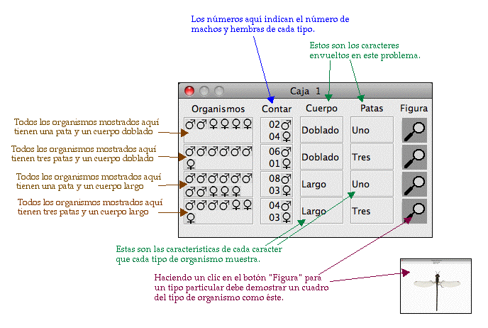

Al comenzar el problema se te da una jaula o caja con una población de criaturas que fueron colectadas en el campo. Cada una de estas criaturas demuestra una de dos características diferentes de un caracter particulares (por ejemplo, si el caracter es Color del Cuerpo, las características podrían ser Cuerpo Rojo y Cuerpo Verde). Tu tarea es descubrir como estas características son heredadas. Tú determinas esto cruzando individuos y observando su descendencia. Despues usas los datos obtenidos para deducir los modelos genéticos que determinan la herencia de estos caracteres. Tú tienes que decidir cuando tienes suficiente información para estar convencido de saber la respuesta - el programa no te dirá la respuesta (excepto cuando está en Modo de Práctica).
Cuando comienzas un nuevo problema,VGLII escoge al azar uno de tres caracteres y un modelo genético. La gama de posibles modelos es configurada por tu instructor cuando se crea el tipo de problema; diferentes tipos de problemas pueden tener un mayor o menor número de posibles modelos y el Modo de Práctica puede ser abilitado o desabilitado para un tipo de problema particular. Ya que éste los asigna al azar,la misma característica puede ser heredada en diferentes formas en los diferentes problemas.
Luego, VGLII escoge características particulares de cada caracter y las asigna al azar a genotipos particulares. Cuando una población de individuos con genotipos al azar ha sido generada; estos individuos son puestos en la Caja 1.
Tu tarea es cruzar individuos de diferentes cajas y observar la descendencia resultante. De estos datos, debes determinar los modelos genéticos de cómo esas características particulares son heredadas.
Todos los problemas en VGLII envuelven modelos genéticos con genes que tienen dos o tres alelos. Basado en esto, hay algunas características que pueden variar:
Para correr el programa simplemente haga un doble clic en el archivo VGLIIx.x. Nota: Asegúrese de tener la carpeta de Problemas en la misma carpeta que el archivo VGLIIx.x. Los botones de la barra de herramientas son demostrados a continuación:
Cuando comienzes a trabajar con VGLII debes ver una barra de herramientas como ésta:
Del menú "Archivo", selecciona "Nuevo Problema" o simplemente haz clic en "Nuevo Problema" en la caja de herramientas y debes ver una lista de archivos con diferentes tipos de problemas. Los archivos están enlistados en orden de dificultad. Archivos adicionales pueden ser generados usando el programa VGLAdmin. Selecciona el archivo y haz un clic en "Abrir".
Una vez que comiences un problema, una ventana (Caja 1) se abrirá en la pantalla. Esta caja es el punto de comienzo para tu proyecto. Los organismos podrían ser (no necesariamente) homocigotos.
Una caja en Modo Regular es demostrada a continuación:

Una secuencia de cruzes es demostrada a continuación:
Esto debería ser escrito como:
Cruze 1: Padres: Uno macho largo de la Caja 1 X Una hembra doble de la Caja 1 Descendencia: 33 Largo/Uno (en la Caja 2)
Si tu instructor ha puesto el Modo de Práctica para un problema particular, tú debes ser capaz de ver los detalles de la "respuesta" - el modelo genético para cada caracter y el genotipo de cada organismo.
En modo de práctica, la caja debe verse como ésta:
Esta es la misma forma en la que se verían en Modo Regular.
 Tú puedes usar esta herramienta para encontrar problemas guardados previamente
en los cuales tú podrías
haber estado trabajando. Para abrir el problema puedes seleccionar "Abrir Problema" desde el menú del
"Archivo" o simplemente hacer un clic en "Abrir Problema" en la barra de herramientas. Una ventanilla
se abrirá para ayudarte a seleccionar el archivo. Navega hacia el directorio en el cual el problema ha
sido guardado. Selecciona el archivo y haces un clic en "Abrir". VGLII leerá el archivo y abrirá el
problema en la misma forma o estado* en el que fue guardado anteriormente.
Tú puedes usar esta herramienta para encontrar problemas guardados previamente
en los cuales tú podrías
haber estado trabajando. Para abrir el problema puedes seleccionar "Abrir Problema" desde el menú del
"Archivo" o simplemente hacer un clic en "Abrir Problema" en la barra de herramientas. Una ventanilla
se abrirá para ayudarte a seleccionar el archivo. Navega hacia el directorio en el cual el problema ha
sido guardado. Selecciona el archivo y haces un clic en "Abrir". VGLII leerá el archivo y abrirá el
problema en la misma forma o estado* en el que fue guardado anteriormente.
*estado - estado en este contexto se define como la colección entera de cajas creadas por el usuario,
incluyendo cajas que fueron creadas por el usuario pero se mantuvieron cerradas durante el curso de
este ejercicio. De manera sencilla, esto significa que cuando se abre un problema, VGLII presentará
todas las cajas creadas por el usuario hasta el punto en el cual fueron guardadas.
 Puedes usar esta herramienta para guardar el trabajo realizado en un archivo.
Para guardar tu trabajo puedes
seleccionar "Salvar" desde el menú del "Archivo" o simplimente hacer un clic en "Salvar" en la barra de herramientas.
Una ventanilla se abrirá para ayudarte a guardar tu trabajo en un archivo en el directorio que escogas.
Navega hacia el directorio en el cual tú quieres salvar tu trabajo. En el espacio de "Nombre del archivo"
escribe el nombre del archivo con el cual tu quieres salvar tu trabajo. Luego haz un clic en el botón de
"Abrir". Esto crea y abre un archivo con el nombre especificado en el espacio y guarda tu trabajo. El archivo
debe tener una extensión ".wrk"
Puedes usar esta herramienta para guardar el trabajo realizado en un archivo.
Para guardar tu trabajo puedes
seleccionar "Salvar" desde el menú del "Archivo" o simplimente hacer un clic en "Salvar" en la barra de herramientas.
Una ventanilla se abrirá para ayudarte a guardar tu trabajo en un archivo en el directorio que escogas.
Navega hacia el directorio en el cual tú quieres salvar tu trabajo. En el espacio de "Nombre del archivo"
escribe el nombre del archivo con el cual tu quieres salvar tu trabajo. Luego haz un clic en el botón de
"Abrir". Esto crea y abre un archivo con el nombre especificado en el espacio y guarda tu trabajo. El archivo
debe tener una extensión ".wrk"
 Es igual a "Como Guardar un Problema" excepto que éste crea una copia del archivo que ya ha sido
creado pero con un nombre diferente.
Es igual a "Como Guardar un Problema" excepto que éste crea una copia del archivo que ya ha sido
creado pero con un nombre diferente.
 Puedes usar esta herramienta para cerrar un problema en el cual
has estado trabajando. Para cerrar el
problema en el que has estado trabajando selecciona "Cerrar Problema" desde el menú "Archivo" o
simplemente haz un clic en "Cerrar" en la barra de herramientas. Se abrirá una ventanilla para confirmar
tu decisión de cerrar el problema. Si seleccionas "Sí" y si tienes trabajo sin salvar entonces la aplicación
te sugerirá salvarlo. Si seleccionas "Sí" entonces una ventanilla aparecerá para ayudarte a salvar tu
trabajo en un archivo en el directorio escogido. Si seleccionas "No" la aplicación cerrará el problema
sin salvar el trabajo.
Puedes usar esta herramienta para cerrar un problema en el cual
has estado trabajando. Para cerrar el
problema en el que has estado trabajando selecciona "Cerrar Problema" desde el menú "Archivo" o
simplemente haz un clic en "Cerrar" en la barra de herramientas. Se abrirá una ventanilla para confirmar
tu decisión de cerrar el problema. Si seleccionas "Sí" y si tienes trabajo sin salvar entonces la aplicación
te sugerirá salvarlo. Si seleccionas "Sí" entonces una ventanilla aparecerá para ayudarte a salvar tu
trabajo en un archivo en el directorio escogido. Si seleccionas "No" la aplicación cerrará el problema
sin salvar el trabajo.
 Para cruzar dos organismos selecciona un organismo macho y uno
hembra de cualquiera de las cajas
abiertas (pueden ser de diferentes cajas). Para cruzar estos organismos y crear la descendencia que
ellos producirían, selecciona "Cruze Dos" de el menú de "Utilidades" o haga un clic en "Cruze" en la
barra de herramientas. Esto creará una nueva caja que contiene los descendientes de los dos padres
usados en este cruze.
Para cruzar dos organismos selecciona un organismo macho y uno
hembra de cualquiera de las cajas
abiertas (pueden ser de diferentes cajas). Para cruzar estos organismos y crear la descendencia que
ellos producirían, selecciona "Cruze Dos" de el menú de "Utilidades" o haga un clic en "Cruze" en la
barra de herramientas. Esto creará una nueva caja que contiene los descendientes de los dos padres
usados en este cruze.
Para imprimir la población hallada en el campo (Caja 1) y todas las cajas generadas, haz un clic en "Imprimir" (demostrado a la izquierda), o seleccione "Imprimir trabajo" desde el menú de "Archivo". Quizás necesites programar la impresora; selecciona "Configurar página" del "Archivo".
 Puedes usar esto para guardar tu trabajo en un archivo
en un formato fácil de imprimir;
este archivo puede ser abierto en cualquier web-browser y muchos procesadores word. Para
imprimir un archivo selecciona "Imprimir a un archivo" desde el menú del "Archivo" o haz
un clic en "Imprimir a un archivo" en la barra de herramientas. Esto debe abrir una ventana
la cual te permitirá darle un nombre al archivo y escoger un destino. Una vez que se le da un
nombre al archivo y has decidido el destino haz un clic en el botón de "Imprimir". Tu trabajo
será salvado en un formato fácil de imprimir. El archivo debe tener una extensión ".html"
Puedes usar esto para guardar tu trabajo en un archivo
en un formato fácil de imprimir;
este archivo puede ser abierto en cualquier web-browser y muchos procesadores word. Para
imprimir un archivo selecciona "Imprimir a un archivo" desde el menú del "Archivo" o haz
un clic en "Imprimir a un archivo" en la barra de herramientas. Esto debe abrir una ventana
la cual te permitirá darle un nombre al archivo y escoger un destino. Una vez que se le da un
nombre al archivo y has decidido el destino haz un clic en el botón de "Imprimir". Tu trabajo
será salvado en un formato fácil de imprimir. El archivo debe tener una extensión ".html"
Seleccionando una o más Cajas y usando "Crear resumen " del menú de Utilidades, puedes hacer que VGLII cuente el número de organismos de cada tipo hallado en las cajas seleccionadas.
Primero, haz un doble clic en cada una de las cajas que desees seleccionar para el resumen; su borde interno se tornará rojo lo cual demuestra que han sido seleccionadas. Puedes deseleccionar la caja escogida haciendo un doble clic en ésta; también puedes quitar la selección de todas las cajas escogiéndolo "Deseleccionar todo" desde el menú de utilidades.
Una vez que has seleccionado un grupo de Cajas, escoge "Crear resumen Chart" del menú de
Utilidades y verás algo como esto:

La información en el tope de la caja muestra que éste fue un resumen de las cajas 6, 7, 8, 9, & 10. Estos organismos fueron producidos de los cruzes de dos padres heterocigotos; entonces, deberíamos esperar una razón 3:1. La razón observada fue 111:37.
Puedes escoger cuales caracteres quieres resumir al seleccionar los caracteres apropiados en la parte de arriba del resumen.
Puedes usar esta herramienta para cerrar/reabrir cualquiera de las cajas creadas hasta ahora. Seleccione "Cajas" del menú de "Utilidades". Una ventana debe abrirse con un listado de todas las cajas creadas hasta ahora. Las que están visibles serán verificadas. Haga un clic en la opción de "Visibilidad" al lado de cada listado de cajas para hacer esa Caja visible/invisible.
Puedes usar esta herramienta para reorganizar las cajas creadas en una forma ordenada. Selecciona "Reordenar Cajas" del menú de "Utilidades". Todas las cajas visibles deben ser alineadas una bajo la otra y de izquierda a derecha.
Para obtener más detalles y un diagrama detallado sobre el fenotipo de los organismos en una caja, puedes hacer un clic en la imagen del fenotipo demostrado en la caja. Esto debe abrir una ventana con una imagen agrandada y más detallada del organismo destacando el fenotipo en cuestión. Nota que estas imagenes son sencillas; solo están disenadas para ilustrar como el fenotipo combinado podría verse. Uno es demostrado a continuación:
 To get more details about the VGLII application you can select "About VGLII"
from the "Help"Para obtener más detalles sobre la aplicación VGLII puedes seleccionar "Acerca de VGLII" del menu
"Ayuda" o simplimente haga un clic en el botón "Acerca de VGL". Esto debe abrir una ventana de información.
To get more details about the VGLII application you can select "About VGLII"
from the "Help"Para obtener más detalles sobre la aplicación VGLII puedes seleccionar "Acerca de VGLII" del menu
"Ayuda" o simplimente haga un clic en el botón "Acerca de VGL". Esto debe abrir una ventana de información.